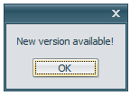
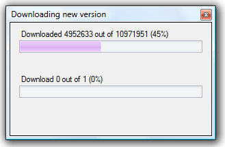
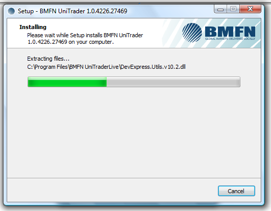

Update¶
The update system (Update) is built into the terminal that will facilitate the user’s updating process. This allows the user to become informed about new updates and install new versions of the program promptly. This system is automatically enabled to bring the newest features UniTrader has to offer. When you see the following message, it means that you can update the UniTrader platform. Just press “Ok” button.
When you see the following form, the downloading is started.
When the downloading is finished, you’ll see Setup form. Just wait for a moment.
Then the UniTrader login window will appear and you will be able to get authorized in the system.
Note
If there is no connection to the server, the live update process will not start.
Note
If any problems with updating occur, please refer to our Technical Support Service.